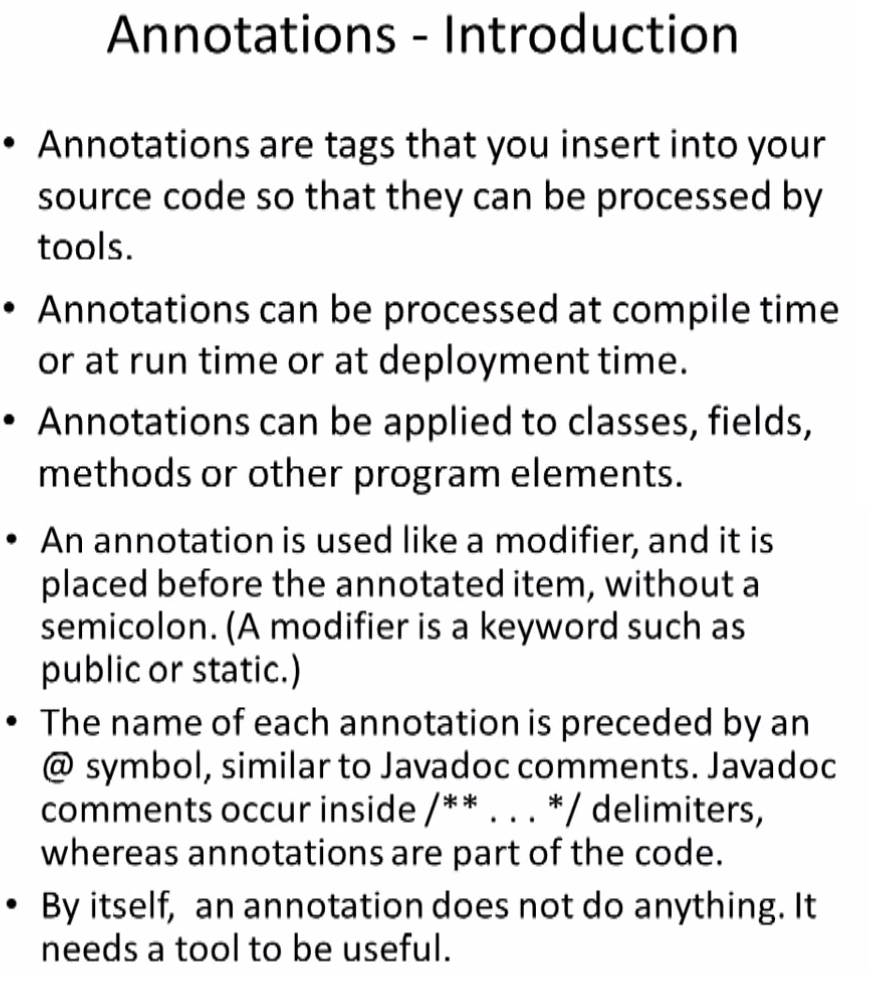
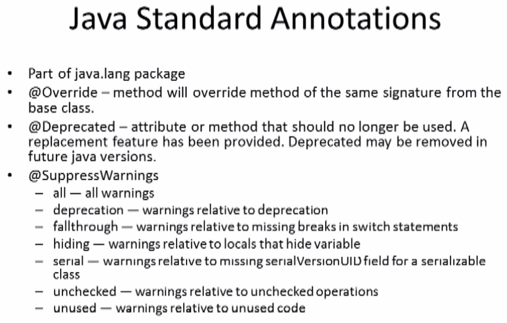
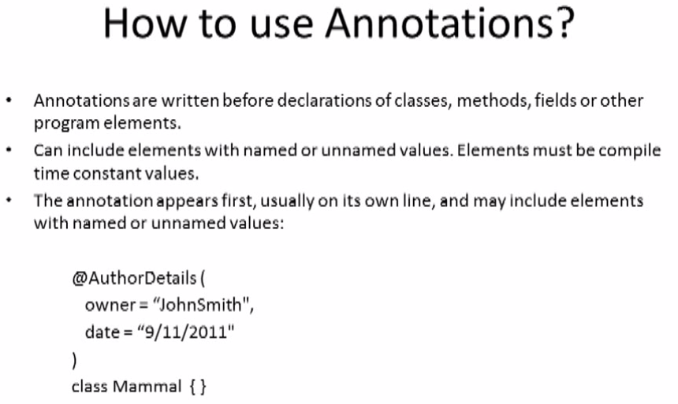
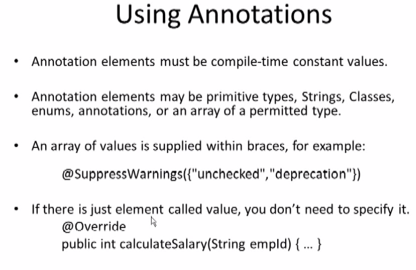
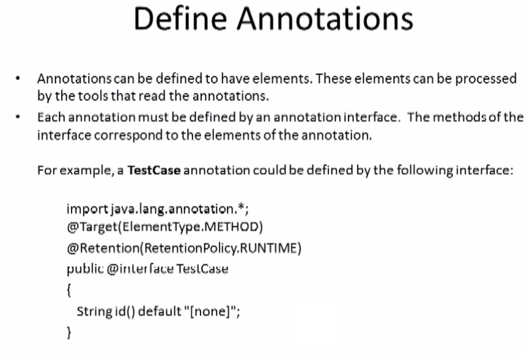
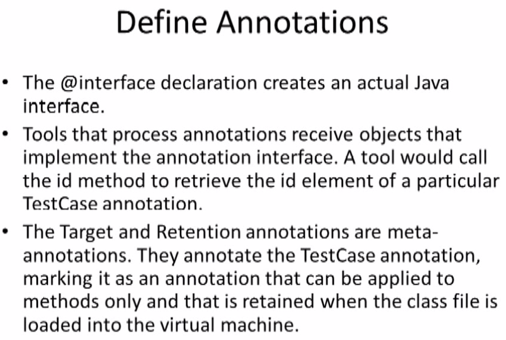

Annotations in Java






- Annotations is new feature in java provided by jdk 1.5 version.
- Annotations can be used to describe the meta data.
- to describe the coding part we use meta data
- up to jdk 1.4 version xml based Technology were used.
- up to jdk 1.5 version xml based Technology as well as annotation based technology were used.
Basic Syntax of Annotation
The difference between comments & annotation
If you provide meta data by using
comments then the meta data will available up to source code.
it may not be available up to .class file & runtime our application. but if you want meta data up to
source code, .class file & runtime our application. then we go for annotation.
Annotation is a meta data, that we are able to provide inside java programs and it also available up to java class file and upto runtime our application
Annotation are executed by using apt(annotation processing tool).
There are mainly two syntax of annotation.
- Declaration Syntax :- @ interface name , annotation name
- Utilization Syntax : - members : - datatype membername() [default value]
- We can use the Utilization annotation in java for (variable, methods, classes).
- Syntax : - @Annotation name (member1=value1, member2=value2....)
programming elements (variable, method, class)
There are Three types of Annotation
- Marker Annotation
Marker annotation is same as marker interface. marker when create interface without methods (without abstract methods) that is called marker interface.
When we declare the annotation without members that annotation called Marker annotation.
Example : - (@Override , @WebListener)
- Single Valued Annotation
Single valued annotation contains only one member
Example : - @SuppressWarnings("unchecked") , @SuppressWarnings("all")
Description : - "unchecked" value stored as key value (value="unchecked")
Description : - "all" value stored as key value (value="all")
- Multi Valued Annotation
If we declared annotation using more than one member that annotation is called Multi Valued Annotation.
Example : - @WebServlet(name="loginServlet" , urlpatterf={"/login.do","/gologin.htm"})
Classification of Annotation
Annotation are divided into two types (
Standard Annotation and
Custom Annotation)
Standard Annotation
Standard annotation are divided into two types (General purpose annotation and Meta annotation)
- General purpose annotation :- General purpose annotation used for common purpose
@Override (available upto java 7) : -
To understand the use of @Override annotation, first
we need to understand the What is method overriding
method overriding is a process of replacing existing method functionality with new functionality.
method overriding is a process of replacing super class method functionality within sub class with new functionality.
@Override is method level annotation, which indicates the method is overrided.
Example : -
public class DB_Driver{
public void getDriver()
{
System.out.println("Type 1 Driver");
}
}
public class NEW_DB_Driver extends DB_Driver{
@Override
public void getDriver()
{
System.out.println("Type 2 Driver");
}
}
public class Test{
public static void main(String[] args)
{
DB_Driver driver=new NEW_DB_Driver();
// DB_Driver driver : - is reference variable of super class
// new New_DB_Driver(); : - object is created of sub class.
driver.getDriver(); // Type 2 Driver
// by using super class , we are calling super class method
// but will get output from sub class method.
This is method over riding concept
}
}
@SuppressWarnings (available upto java 7) : -
To understand SuppressWarnings annotation, first we need to understand (unchecked operations/ unsafe operations) in java application.
If you want hide the warning messages then you can use @SuppressWarnings annotation
To suppress the Warning messages which are generated by particular method, we need to use @SuppressWarnings annotation.
@Depicated (available upto java 7) : -
To understand @Depricated annotation , first we need to understand what is the meaning of Deprecations.
all the older/out dated methods are deprecated methods. if we use deprecated methods in java, then
complier will provide "Deprecation message"
Java has provided Deprecation servie only for pre-defined methods. but if you want to provide Deprecation expectedly for user defined methods.
Example : -
public class Employee{
@Deprecated // It will gives warning that this method is older/out dated method.
public void SalaryCal()
{
System.out.println("Salary is calcuated using Basic + HRA");
}
public void New_SalaryCal()
{
System.out.println("Salary is calcuated using Basic + HRA +TA");
}
}
public class Test{
public static void main(String[] args)
{
Employee emp=new Employee();
emp.SalaryCal();
emp.New_SalaryCal();
}
}
@FunctionalInterface (available into java 8) : -
if declared the interface with one abstract method the it is called unctionalInterface
All (@Override, @SuppressWarnings,@Depicated, @FunctionalInterface) annotation are stored in java.lang package
- Meta annotation :- Meta annotation are annotation about annotation. (To prepare custom annotation we use Meta annotation)
@Documented
In java, By default annotation are not Documentable
When you create java help document.
Example : -
@CheckSalary
public class Employee{
public void SalaryCal()
{
System.out.println("Salary is calcuated using Basic + HRA");
}
}
c:\ javadoc Employee.java
by using javadoc command we prepare .html file as help of java file.
then in html file @CheckSalary annotation will not listed (will not come).
By default annotations are not Documentable, but the main purpose of
@Documented annotation is to make any annotation as Documentable annotation.
@Inherited
Inheritance provides reusalibity features. We can re use all public variable, methods of superclass within child class.
all super class members will inherited by child class.
using @Inherited annotation we can inherit all super class annotation into sub child class.
By default annotations are not inheritable, but the main purpose of @Inherited annotation is to make any annotation as inheritable annotation.
@Target
Main purpose of @Target annotation is to define target elements for the annotation to which you want to annotation.
We can apply annotation in java for (variable, methods, classes, constructors, packages, local variables).
We can implements following elements type in @Target annotation
Example : - @Target(ElementType.TYPE)
- @Target(ElementType.TYPE) :- means applicable for (Class, Abstract Class, Interface)
- @Target(ElementType.FIELD) :- means applicable for (class variables)
- @Target(ElementType.METHOD) :- means applicable for (Class based methods)
- @Target(ElementType.CONSTRUCTOR) :- means applicable for (Constructors)
- Example : -
@Target(ElementType.TYPE,ElementType.FIELD, ElementType.METHOD)
@Interface CustomAnnotation{
}
@Retention
If you want to define annotation for particular stage level (source code level,.class file level or runtime our application.level)
then you must go for @Retention annotation.
Syntax of @Retention annotation
- @Retention(RetentionPolicy.SOURCE :- Available up to Source Code (.java File)
- @Retention(RetentionPolicy.CLASS :- Available up to (.class File)
- @Retention(RetentionPolicy.RUNTIME :- Available up to particular run time. means available for (.java File , .class file) as well as (run time.)
Example : - Class Level (User define Annotation)
import java.lang.annotation.*;
@Inherited
@Documented
@Target(ElementType.TYPE)
@Retention(RetentionPolicy.RUNTIME)
@interface Course{
String cource_id() default "C-111";
String cource_name() default "java programming";
int cource_fee() default 1000;
}
@Course(cource_id="C-333",course_name="SPRING",cource_fee=30000)
public class Student{
String student_id;
String stundent_name;
String student_address;
public Student(String student_id,String stundent_name,String student_address)
{
this.String student_id=String student_id;
this.String stundent_name=String stundent_name;
this.String student_address=String student_address;
}
public void getStudentDetails()
{
System.out.println("Student Details");
System.out.println("Student ID : - "+student_id);
System.out.println("Student : - "+stundent_name);
System.out.println("Address : - "+student_address);
System.out.println("-------------------------------------");
}
}
import java.lang.annotation.*;
public class TestAnnotation{
public static void main(String[] args) throws Exception
{
Student student=new Student("1001","Mayuresh","Pune");
student.getStudentDetails();
// Read Course annotation values;
Class class=student.getClass();
Annotation annn=class.getAnnotation("Course.class");
Course course= (Course) ann;
System.out.println("Course Details");
System.out.println("Course ID : - "+course.cource_id());
System.out.println("Course : - "+course.cource_name());
System.out.println("Fee : - "+course.cource_fee());
System.out.println("-------------------------------------");
}
}
Example : - Method Level (User define Annotation)
import java.lang.annotation.*;
@Inherited
@Documented
@Target(ElementType.METHOD)
@Retention(RetentionPolicy.RUNTIME)
@interface Course{
String cource_id() default "C-111";
String cource_name() default "java programming";
int cource_fee() default 1000;
}
public class Student{
String student_id;
String stundent_name;
String student_address;
public Student(String student_id,String stundent_name,String student_address)
{
this.String student_id=String student_id;
this.String stundent_name=String stundent_name;
this.String student_address=String student_address;
}
@Course(cource_id="C-333",course_name="SPRING",cource_fee=30000)
public void getStudentDetails()
{
System.out.println("Student Details");
System.out.println("Student ID : - "+student_id);
System.out.println("Student : - "+stundent_name);
System.out.println("Address : - "+student_address);
System.out.println("-------------------------------------");
}
}
import java.lang.annotation.*;
import java.lang.reflect.*;
public class TestAnnotation{
public static void main(String[] args) throws Exception
{
Student student=new Student("1001","Mayuresh","Pune");
student.getStudentDetails();
// Read Course annotation values;
Class class=student.getClass();
Method method=class.getMethod("getStudentDetails");
Annotation annn=method.getAnnotation("Course.class");
Course course= (Course) ann;
System.out.println("Course Details");
System.out.println("Course ID : - "+course.cource_id());
System.out.println("Course : - "+course.cource_name());
System.out.println("Fee : - "+course.cource_fee());
System.out.println("-------------------------------------");
}
}
All (@Documented, @Inherited,@Target, @Retention) annotation are stored in java.lang.annotation package
Custom Annotation
Custom Annotation areUser defined annotation, which are generally created by programmer as per the application requirement.
To create the Custom Annotation areUser defined annotation in java follow the following steps
- Define /Declare user define annotation
- Utilize user define annotation in java program/application
- Access data from user define annotation : - We required Java Reflection Api to access data from user define annotation
All (@Override, @SuppressWarnings,@Depicated, @FunctionalInterface, @Documented, @Inherited,@Target, @Retention) annotation are stored in java.lang.annotation.Annotation Interface
Note: - In java, All the Annotations are interfaces
For validation in Spring
we required following Validation api
-
for Custom Annotation in java : - for hibernate based validation
https://mvnrepository.com/artifact/org.hibernate/hibernate-validator/4.2.0.Final
-
Bean Validation API » 1.0.0.GA : - used for javax. validation
https://mvnrepository.com/artifact/javax.validation/validation-api/1.0.0.GA
Note: - you must download (for hibernate based validation jar and javax.validation jar) otherwise it will never work.
EXAMPLE OF SPRING WEB MVC VALIDATION USING ANNOTATION
checkName annotation
package edu.spring.validator;
import java.lang.annotation.*;
import javax.validation.Constraint;
import javax.validation.Payload;
@Documented
@Retention(RetentionPolicy.RUNTIME)
@Target({ElementType.FIELD,ElementType.METHOD})
@Constraint(validatedBy=NameNotNull.class)
public @interface checkName {
String message() default " ";
int min() default 0;
int max() default 0;
Class<?>[] groups() default{};
Class<? extends Payload>[] payload() default {};
}
NameNotNull Validator class
package edu.spring.validator;
import javax.validation.ConstraintValidator;
import javax.validation.ConstraintValidatorContext;
public class NameNotNull implements ConstraintValidator<checkName, String>{
private int min;
private int max;
@Override
public void initialize(checkName parameters) {
min = parameters.min();
max = parameters.max();
}
@Override
public boolean isValid(String nme, ConstraintValidatorContext ctx) {
if (nme==null)
{
return false;
}
int length = nme.length();
return length >= min && length <= max;
}
}
Employee Bean and and implement annotation
package edu.spring.bean;
import edu.spring.validator.checkName;
public class Employee {
private String countryName;
@checkName(message="Enter Name between 2 to 5 characters", min=2,max=5)
private String pmName;
public String getCountryName() {
return countryName;
}
public void setCountryName(String countryName) {
this.countryName = countryName;
}
public String getPmName() {
return pmName;
}
public void setPmName(String pmName) {
this.pmName = pmName;
}
}
Check validation in Controller
package edu.spring.controller;
import javax.validation.Valid;
import org.springframework.stereotype.Controller;
import org.springframework.ui.Model;
import org.springframework.validation.BindingResult;
import org.springframework.web.bind.annotation.RequestMapping;
import org.springframework.web.bind.annotation.RequestMethod;
import edu.spring.bean.Employee;
@Controller
public class DefaultController {
@RequestMapping(value="/",method=RequestMethod.GET)
public String country(Model model){
model.addAttribute("employee", new Employee());
return "emppage";
}
@RequestMapping(value="saveEmp", method = RequestMethod.POST)
public String saveCountry(@Valid Employee employee ,BindingResult bindingResult, Model model) {
if (bindingResult.hasErrors()) {
return "emppage";
}
model.addAttribute("countryName", employee.getCountryName());
model.addAttribute("pmName", employee.getPmName());
return "success";
}
}
Index.jsp for testing Validation
<%@ taglib prefix="form" uri="http://www.springframework.org/tags/form" %>
<%@ page language="java" contentType="text/html; charset=UTF-8" pageEncoding="UTF-8"%>
<!DOCTYPE html PUBLIC "-//W3C//DTD HTML 4.01 Transitional//EN" "http://www.w3.org/TR/html4/loose.dtd">
<html>
<head>
<meta http-equiv="Content-Type" content="text/html; charset=ISO-8859-1">
<title>EMPLOYEE FORM</title>
<style>
.error {
color: #ff0000;
font-style: italic;
font-weight: bold;
}
</style>
</head>
<body>
<table>
<form:form action="saveEmployee" method="post" commandName="country">
<tr> <td>Country Name:</td> <td><form:input path="countryName"/> </td> </tr>
<tr> <td> PM Name :</td> <td><form:input path="pmName"/>
<form:errors path="pmName" cssClass="error" /></td> </tr>
<tr> <td colspan=2> <input type="submit"> </td>
</form:form>
</table>
</body>
</html>